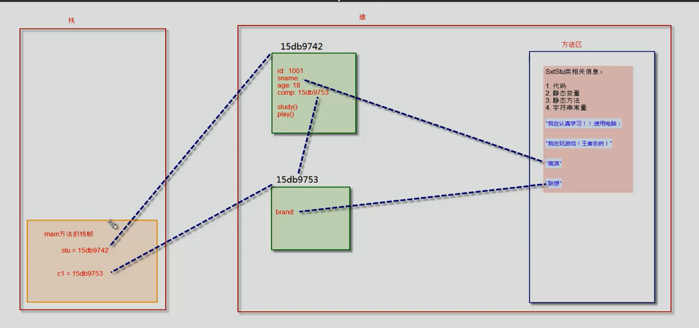

面向对象
宏观上面向对象把握，微观处理仍是面向过程
java虚拟机内存分析
栈 stack
堆 heap
方法区 method area
栈：
- 栈描述的是方法执行的内存模型，每个方法被调用都会创建一个栈帧（存储局部变量，操作数，方法出口等）
- JVM为每个线程创建一个栈，用于存放该线程执行方法的信息（实际参数、局部变量）
- 栈属于线程私有，不能线程间共享
- 栈由系统分配，速度很快。栈是连续的内存空间。
堆
- 堆用于存储创建好的对象和数组（数组也是对象）
- JVM只有一个堆，所有线程共享
- 堆是不连续的内存空间，分配灵活但速度慢。
方法区（静态区）
- JVM只有一个方法区，被所有线程共享
- 方法区实际也是堆，只是用于存储类、常量相关的信息
- 用来存储程序中永远不变或唯一的内容（类信息class对象，静态变量，字符串常量）
程序执行时：
- 先把类的信息加载到方法区：代码、静态变量、静态方法、字符串常量
- 调用main方法，开辟栈帧。保存：局部变量。
- main方法中会new对象。首先会执行对象的构造器，要开辟栈帧，构造完成后栈就清空了，对象存在堆中，存储：对象属性、对象方法。每个堆中的对象都有一个地址，这个地址赋给main方法中存储地址的变量名。
- 给对象赋值，字符串直接给赋值方法区的地址，数据直接在堆中更改。
public class SxtStu {
//属性fields
int id;
String sname;
int age;
Computer comp; //计算机
//方法
void study(){
System.out.println("我在认真学习！！,使用电脑："+comp.brand);
}
void play(){
System.out.println("我在玩游戏！王者农药！");
}
//构造方法。用于创建这个类的对象。无参的构造方法可以由系统自动创建。
SxtStu(){
System.out.println("调用了无参的构造方法！");
}
//程序执行的入口，必须要有
//javac Sxtstu.java , java Sxtstu
public static void main(String[] args) {
SxtStu stu = new SxtStu(); //创建一个对象
stu.id=1001;
stu.sname= "高淇";
stu.age = 18;
Computer c1 = new Computer();
c1.brand = "联想";
stu.comp = c1;
stu.play();
stu.study();
}
}
class Computer {
String brand;
}

构造器
-
通过new关键字调用
-
虽然有返回值，但不能定义返回值类型（返回值类型就是这个类），不能在构造器里使用return返回值，可以写return ;用于结束程序，但没有意义。绝对不能有返回值
-
如果没有定义构造器，会自动生成一个无参构造器，如果定义了构造器，则不会生成
-
构造器方法名必须和类名一致。
-
构造方法的第一句总是
super() -
构造方法中使用this.xxxx ，this表示创建好的对象
垃圾回收GC（Garbage Collection）
- 发现无用的对象
- 回收无用对象占用的空间
方法：
- 引用计数法
堆中每个对象都有一个引用计数，被引用一次就+1，被引用变量值变为null，则计数-1，直到计数为0，则变为无用对象。
优点是算法简单，缺点是存在循环引用。
a，b互相引用，他们计数都是2，然后a，b设为null，引用计数-1.但还不为0. - 引用可达法（根搜索算法）
所有引用关系看成一张图，从根节点开始，寻找相应的引用节点，找到这个节点后，继续寻找这个节点的引用节点，当所有引用节点寻找完毕，剩余的节点就认为是没有被引用的节点。
通用的分代垃圾回收机制
- 对象分为三种状态：年轻代，年老代，持久代。
- JVM将堆内存划分为Eden、Survivor和Tenured/Old。 年轻代在前两个，年老代在后一个。持久代在方法区（静态）

- 新创建的对象，首先放在Eden区中。
- Eden满了后，触发GC，处理无用对象。
- Minor GC：用于清理年轻代区域。将有用的复制到survivor1，然后清空Eden
- 继续创建对象，再满了后，将survivor1（s1）中不能清空的对象放到S2 ，同时将Eden区不能清空的放到S2；清空Eden和S1.
- 重复多次（15次）survivor没有被清理，会被放到年老代Old（Tenured）区中。
- 当Old达到一定比例，触发Major GC，清理老年代。
- 当Old满了，触发Full GC。注意，Full GC清理代价大，系统资源消耗高。
- Major GC ：清理年老代
- Full GC 全面清理：清理年轻代，年老代区域，成本很高，影响性能
System.gc() 建议系统调用垃圾回收，但系统不一定会调
对象创建的过程和this的本质
对象创建：
- 分配对象空间，为对象成员变量初始化为0或空
- 执行属性值的显式初始化
- 执行构造方法（里面可以使用this）
- 返回对象的地址给相关变量
this指的是 “创建好的对象的地址。”在构造方法和普通方法中都可以使用。
- 在一个方法中使用this调用这个对象的其他方法
- 在一个构造其中使用 this.TEstThis(a,b)调用这个类的其他构造方法。（必须放在第一句）
- this不能用在static中。（对象存在堆中，静态变量存在方法区，方法区里没有对象）
static
static修饰的成员变量和方法从属于类。
普通变量和方法从属于对象。
- 静态方法内不能使用普通方法和普通变量；但普通方法里可以使用静态方法和静态变量。（普通方法存在堆中，静态方法存在工作区，没有对象就没有堆中的数据，但是没有对象却有方法区的数据）
- this代表的是当前的对象，也就是堆上的数据，而不是方法区的数据。
静态初始化块执行顺序
- 上溯到Object类，先执行Object的静态初始化块，再往下执行子类的静态初始化块，一直执行到当前类的静态初始化块
- 构造方法执行顺序与它一致。
static {
}
语句块内的内容在类初始化时执行（把类加载到方法区时执行）
参数传递
- java中所有参数都是值传递（传递的是值的副本）
- 引用类型参数传的是对象的地址，副本和原参数都指向同一个地址。改变副本指向的对象的值，原参数的值也会改变。
包
-
写项目一定要加包
-
package cn.stx.oo; //一定是非注释性语句的第一句
-
com.stx 和 com.stx.gao 实际上是无关的。
-
使用不同包中的类，要说明路径。
import cn.stx.oo.User; //导入了user类 -
导入类中的静态属性：
import static java.lang.Math.*
继承
- 使用Ctrl+T 查看类的继承结构
- a instanceof b //判断a是不是b这个类的实例
方法重写 override
- 重载 overload
- 重写 override ： 重写父类方法
重写：
- 方法名和形参列表与父类保持一致。
- 返回值类型和声明异常类型，子类<=父类。子类的返回值类型可以是父类的返回类型，或者是父类返回类型的子类。
- 访问权限，子类>=父类
Object类
Object类是所有类的祖先...
Object类有一个toString方法，返回 类名@16进制的hashCode
toString经常需要重写。
public String toString()
{
return "toString方法的重写"
}
== 和 equals
== 代表比较双方是否相同。如果是基本类型，则表示值相等；如果是引用类型，则表示地址相等。
Object类中定义了equals方法，代表“对象内容相等”的逻辑。
equals也经常重写
@Override
public boolean equals(Object obj)
{
if(this == obj)
return true;
if(obj == null)
return false;
if(getClass() != obj.getClass())
return false;
User other = (User)obj; //强制转型为当前类。
if (id != other.id ) //id是当前类的属性
return false;
return true;
}
super方法
super是直接父类的引用，使用super访问父类中被子类覆盖的方法和属性。